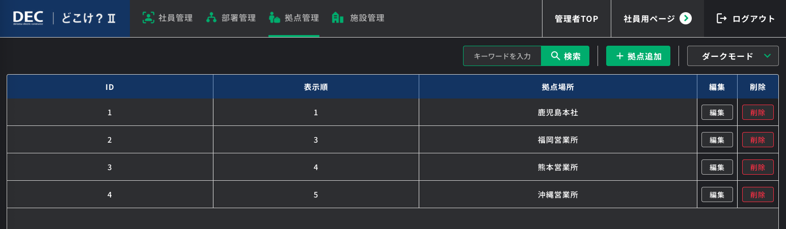

作品一覧へ戻る
どこけ？Ⅱ（株式会社DECソリューションズ）
既存の在席管理・電子ホワイトボード製品を、クラウド版としてノーコードでリニューアル。設計から実装・運用保守までを一人で担当。

概要
オフィスの在席状況を共有する電子ホワイトボード製品「どこけ？」を、クラウド版としてノーコードでリニューアルしたプロジェクト。既存製品の機能を踏まえつつ、Bubble でクラウドサービスとして再構築しました。
技術的課題
- 既存製品の機能・利用フローを踏襲しつつ、クラウド版として再設計する必要があった
- オフィスの在席状況をリアルタイムに共有・更新できる画面設計
主な担当
- 既存製品の要件整理とクラウド版としての再設計
- Bubble による在席管理・電子ホワイトボード機能の実装
- 利用者が直感的に在席状態を更新できるUIの設計
- リリース後の運用保守・機能追加
成果
- 既存製品のクラウド版リニューアルを完了し、本番稼働中
担当工程
- 要件定義
- 基本設計
- 詳細設計
- 実装
- テスト
- 運用保守